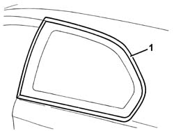
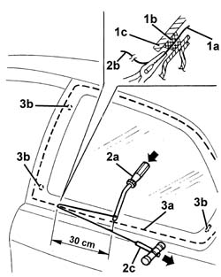
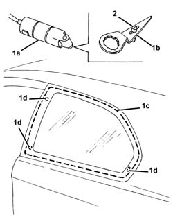
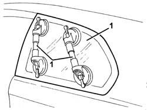
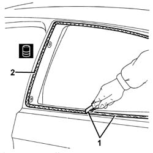
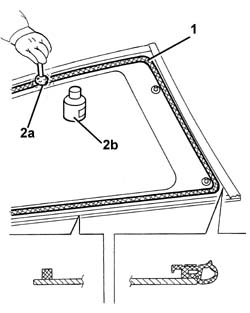
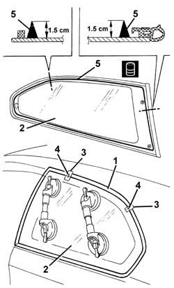
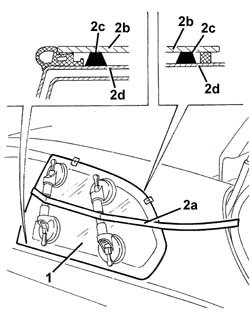

7035C54 side window one lh or rh r r includes cleaning of housing
- Path
- Procedures > 70 FITTINGS > 7035 BODYSHELL WINDOWS > 7035C passenger compartment side fixed windows > 7035C54 side window one lh or rh r r includes cleaning of housing
- Kind
- repair procedure (removal / refitting; the operation number is the code)
- Applies to
- all engines; all production periods
- Interactive page
- https://sloeber94.github.io/elrnDB-a147/en/#/3025792
Applies to: all engines; all production periods
 Removing
Removing
 Refitting
RefittingFold over the rear seat backrests.
7040L40 front compartment scuff strip - r r (left and right sides)
7050A22 rear seat cushion - r+r
7040H50 rear panel - r r (left and right sides)
7040H38 central pillar upper element - r r (left and right sides)
7040G30 boot light bulb holder - r r
7040H42 rear pillar trim - r r (left and right sides)
1. Apply a double layer of adhesive tape to protect the edges of the bodywork along the entire perimeter of the window.

Applies to: all engines; all production periods
The bead of sealant on the side window can be cut using either harmonic wire or the vibrating knife; both methods are described below.
To cut the bead using harmonic wire, proceed as follows.
1. Cut a section of harmonic wire about 50 cm long then, using pliers, insert one end (1a) of the harmonic wire through the bead of sealant (1b) which secures the window (1c).
2. Secure the end (1b) of the wire to the appropriate retaining tool (2a) located inside the car. Secure the end (2b) of the wire to the traction handle (2c) located outside the car.
3. The operator inside the car must keep the end of the tool (2a) on the bead of sealant (3a) at about 30 cm from the point of passage of the wire. The other operator outside the car must pull the handle (2c), following the outline fo the window, and cut the bead of sealant (3a). Repeat the operation in sections of about 30 cm, until the whole of the bead of sealant (3a) is cut. During cutting, be careful with the side window's centring pins (3b).

Applies to: all engines; all production periods
To cut the bead using the vibrating knife, proceed as described below.
1. Using a vibrating knife (1a) with blade (1b), cut the sealant (1c) along the top, rear and bottom of the windscreen, working from outside the car. During cutting, be careful with the window's centring pins (1d).
2. Remove the blade's stop pin and cut the bead of sealant along the front of the window, working from outside the car.

Applies to: all engines; all production periods
1. Apply the suction handles to the window, then remove the window.

Applies to: all engines; all production periods
Refitting
Removing1. Using a suitable tool, cut and smooth off the bead of sealant in the side window frame, so as to leave a thickness of between 0.25 and 1 mm, without scratching the paintwork. The sealant left in the housing will act as a backing for the new bond.
2. Clean the side window seating carefully with compressed air and thoroughly degrease with heptane. If glueing takes place 60 minutes after cutting and smoothing the bead of sealant, treat the sealant surface with the specific activator and wait 15 minutes before fixing the windscreen.
 | Type | Component | Name | Qty. |
|---|---|---|---|---|
2 | PUR activator | WINDOW HOUSING | - | - |
Touch up the paintwork if necessary.

Applies to: all engines; all production periods
Check that the window is undamaged.
1. Degrease the screen-printed edge of the new window using heptane.
2. Using the swab (2a) supplied in the kit, apply the glass adhesion promoter (primer) (2b) on the printed perimeter.

Applies to: all engines; all production periods
1. Remove the adhesive tape from the edges of the bodywork along the perimeter of the side window.
2. Test fit the window and centre it perfectly, with the side doodr closed.
3. Once the window is centred, mark the reciprocal positions of the window and seating, with strips of adhesive tape.
4. Cut the strips of adhesive tape and remove the window.
5. Use an air gun to extrude a bead of sealant arond the edge of the windscreen as evenly as possible.
| Type | Component | Name | Qty. |
|---|---|---|---|---|
5 | Window bonding sealant | FIXED SIDE WINDOW. | Product n. 71711976 | - |

Applies to: all engines; all production periods
1. Position the window in its seating immediately after applying the sealant and bed it into position.
2. Fit the belt (2a) as shown in the figure and tension it so as to apply even pressure over the entire window, in order to ensure a perfect match between window (2b), sealant (2c) and window frame (2d).

Applies to: all engines; all production periods
Before refitting the interior components of the car, check that there are no leaks by carrying out a water test.
7040H42 rear pillar trim - r r (left and right sides)
7040G30 boot light bulb holder - r r
7040H38 central pillar upper element - r r (left and right sides)
7040H50 rear panel - r r (left and right sides)
7050A22 rear seat cushion - r+r
7040L40 front compartment scuff strip - r r (left and right sides)